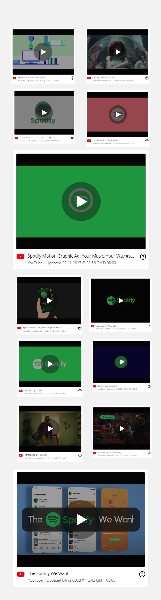
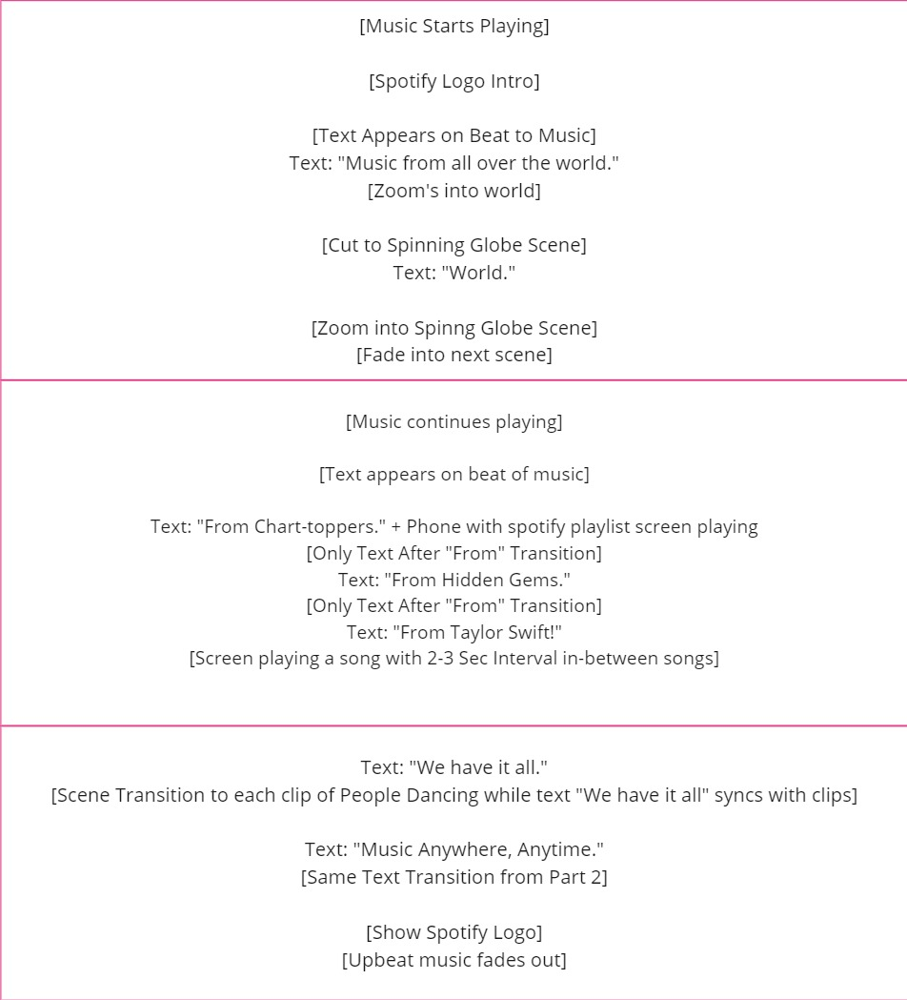

Spotify Video Ad
A motion graphics-driven promotional video showcasing the features of using Spotify.
TYPE OF WORK
Academic
SERVICES
Motion Graphics
YEAR
2023
COLLABORATERS
Kong Jit Hong, Lutfiah
Working closely with my groupmates Kong & Lutfiah we approached
this assignment in the methodically choosing what should be
priortised and where we can really focus our hands on to get the
vision that we wanted.
Breaking down the project into a few milestones.
Using this workflow, helped us to manage workload efficiently. Allowing us to express our minds creatively without the worry of planning what to do next.
Our inspiration mainly coming from other creators to see how they did it and what we can implement in our own video. Following our research the creators utilised the songs rythm to time their animations and of course sticking to Spotify's brand using greens and whites.

Script was broken down into 3 parts.
Part 1 of the script is to highlight that Spotify is a platform
that is accessible anywhere.
Part 2 is to highlight the infinite number of genres there are
on the platform.
Finally, part 3 is a combination of part 1 and 2. Where our
message conveys "Music, anywhere anytime."
Storyboarding allows us to effectively plan out the scenes and gather assets needed before animating.